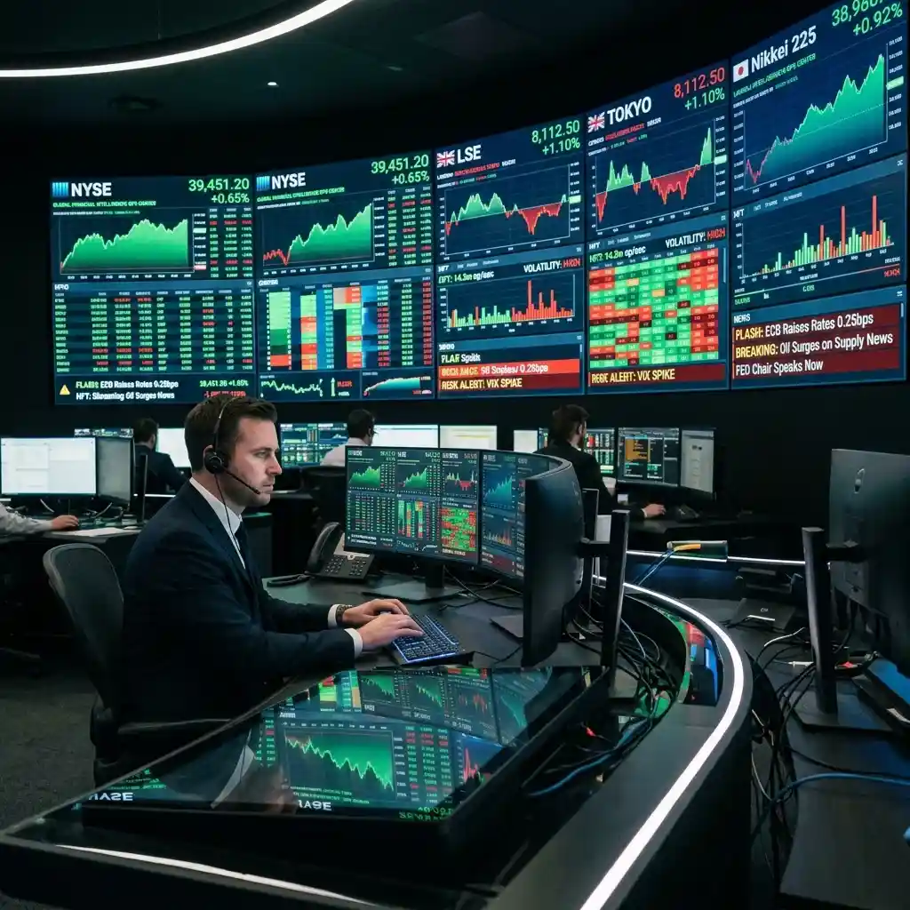

Tracking Stock Market News: The Multi-Stream Advantage

In the global financial ecosystem of 2026, the traditional single-source news model is a significant handicap for any serious investor or trader.
The stock markets of today are defined by "speed-of-light" execution, where high-frequency trading (HFT) algorithms react to news in the milliseconds before it even appears on a television screen. For the individual investor, staying competitive means closing the "information gap" by aggregating raw, high-velocity data from multiple sources simultaneously. From the official earnings releases to the live market handovers between London and New York, the narrative of the global market is a multidimensional puzzle. YoutubeMulti offers the ideal platform to build a "Master Market Dashboard," ensuring you have institutional-grade situational awareness right from your desktop.
The Global Market Opening: Monitoring the London-New York Handover
One of the most intense periods of market activity is the "Handover"—the overlap between the London Stock Exchange (LSE) close and the New York Stock Exchange (NYSE) open. This period often sets the tone for the entire US trading day, as global capital flows are rebalanced and sentiment from the European session is absorbed. To truly understand the 2026 market, you must be able to monitor the "closing ripples" in Europe alongside the "opening surges" in the US simultaneously.
Using YoutubeMulti, you can create a dedicated "Handover Intelligence Grid." Dedicate the primary tile to a live high-definition ticker for the S&P 500, while keeping secondary tiles for the FTSE 100 (London) and DAX (Frankfurt). By watching the reaction of professional global macro analysts on YouTube as they switch focus between continents, you can gain a "second-order" perspective on the day's likely momentum. This side-by-side comparison allows you to spot "global arbitrage" opportunities or signs of a broader market rotation before they become common knowledge. Total situational awareness of global liquidity is the key to mastering the opening bell.
Earnings Season Survival: Real-Time Analysis of Quarterly Reports
Earnings season is the "Super Bowl" of the financial world. When a major company like Apple, NVIDIA, or Amazon releases its quarterly report, the market reaction is immediate and often massive. The official PDF from the company's IR (Investor Relations) page provides the raw numbers, but the real "Alpha" is uncovered in the follow-up analyst Q&A and the technical breakdowns from independent specialists. Passive consumption of a single news summary is the fastest way to miss the "fine-print" details that dictate the stock's long-term trajectory.
A multi-stream surveillance setup allowing you to monitor these individual layers in real-time is an essential tool. Use one tile for the official earnings call audio (on YouTube), another for a live-blog from a top-tier financial publication (tracking the EPS and Revenue vs. Expectations), and a third for a technical analysis (TA) specialist who focuses on that specific stock. This "Earnings Triangulation" ensures that you understand not just "what" the numbers were, but "how" the market is interpreting them. For instance, seeing a stock "beat" earnings but "miss" on forward guidance in real-time allows you to make an informed decision before the broader market settles on a narrative. This is institutional-grade earnings monitoring, now available to everyone.
The Influence of Algorithmic Trading: Spotting the Patterns
In 2026, algorithmic trading accounts for over 80% of all market volume. These algorithms are programmed to react to specific "triggers"—key price levels, news keywords, or sudden volume spikes. For the human trader, competing with these machines requires "pattern recognition" that goes beyond a single chart. You must be able to see the "market depth," the "order book heatmaps," and the "social sentiment" all in one view to understand why a sudden, unexpected move is happening.
YoutubeMulti allows you to build an "Algo-Watching Operations Center." Tile 1 for the primary 5-minute price chart. Tile 2 for a live Order Flow or Volume Profile dashboard. Tile 3 for a live social media feed (like the ticker symbol on X or Reddit) tracking the latest posts. Tile 4 for a live-blog or stream from a professional quant developer who is breaking down the latest "liquidity traps" and "institutional levels" in real-time. This "360-degree view" provides a level of market intelligence that helps you see the "invisible hand" of the algorithms before they liquidate your position. Total situational awareness is the only protection against the high-frequency market world.
Building Your Master Market Dashboard with YoutubeMulti
A major market event is a high-information, high-energy occasion. Between the initial viral post, the subsequent news reports, and the thousands of conflicting expert opinions, there is too much data for a single screen. YoutubeMulti allows you to build a professional-grade "Financial Intelligence Ops Center" (FIOC) to monitor the entire market landscape.
Setting Up Your Global Liquidity Monitoring Grid
- Tile 1: Main Indices: A high-definition, live-updating map showing the S&P 500, Nasdaq, and Russell 2000.
- Tile 2: Global Context: A live dashboard showing current Gold, Oil, and US Dollar (DXY) values for macro-alignment.
- Tile 3: Professional Commentary: A feed from a reputable global financial news agency (like Bloomberg or Reuters) for a baseline narrative.
- Tile 4: Sector Deep-Dive: A YouTube channel dedicated to technical analysis or quantitative finance.
- Tile 5: Sentiment Pulse: A live feed from X (formerly Twitter) or Reddit, tracking the most influential "FinTwit" and community reaction themes.
Looking Ahead: The Future of High-Frequency Information Consumption
As we look toward 2027 and beyond, the future of finance is undeniably data-driven and highly transparent. We are moving toward a world where every investor has access to the same tools as a major bank. Future dashboards will likely include built-in AI "insight summarizes," real-time "anomaly detection," and seamless integration with global reputation-integrity maps. YoutubeMulti is already providing the foundation for this high-tech future, allowing you to build your own bespoke "strategic monitoring" interface today.
The era of the "passive investor" is evolving into the era of the "connected analyst." Whether you are looking to protect your retirement fund or capitalize on the next major tech breakthrough, having total situational awareness is your greatest asset. The financial world moves fast, and with a multi-stream surveillance setup, you ensure that you are never caught or influenced by the next "breaking" viral trend. The future of financial success depends on the clarity of the information we consume.
Conclusion: The Necessity of Real-Time Multi-Stream Monitoring
The 2026 financial landscape is a multidimensional puzzle of data, sentiment, and speed. It is no longer enough to just "follow" the market—you must monitor it as it breathes. By utilizing advanced tools like YoutubeMulti, you can ensure that you are always at the center of the financial intelligence curve. Don't just read the headlines—monitor the charts, analyze the sentiment, and experience the truth behind the viral trends in real-time. The era of total market awareness is here.